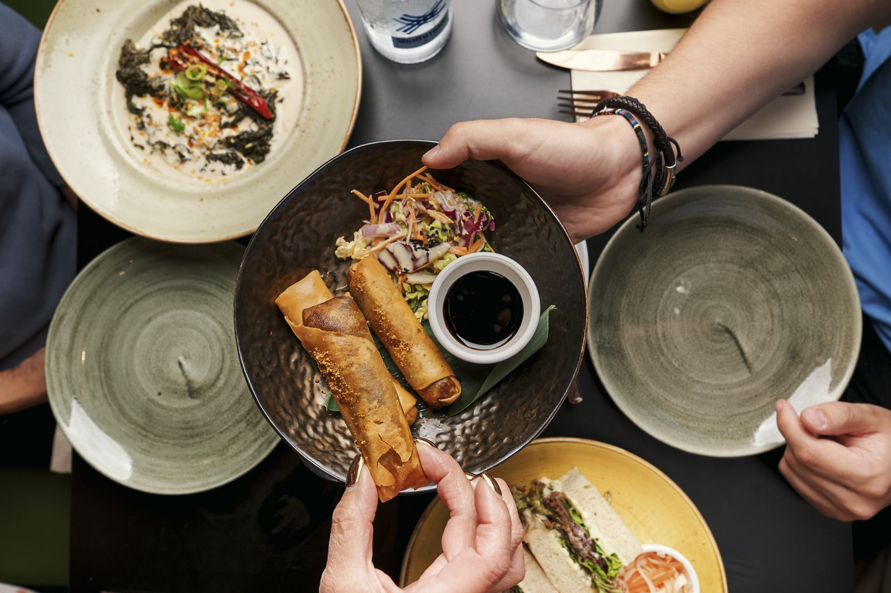
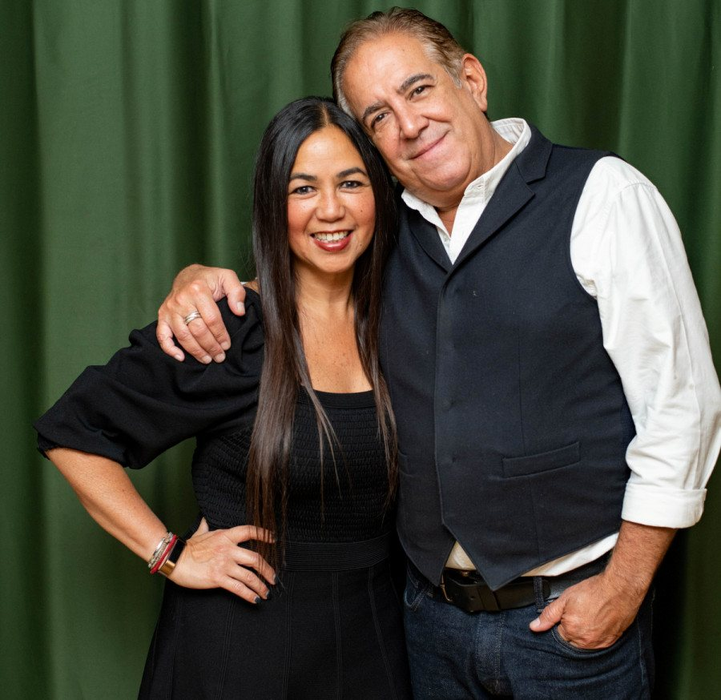
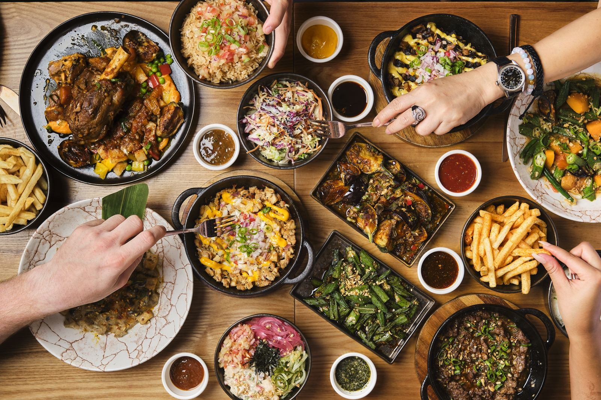
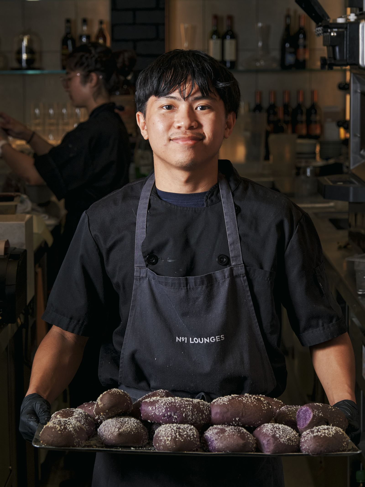
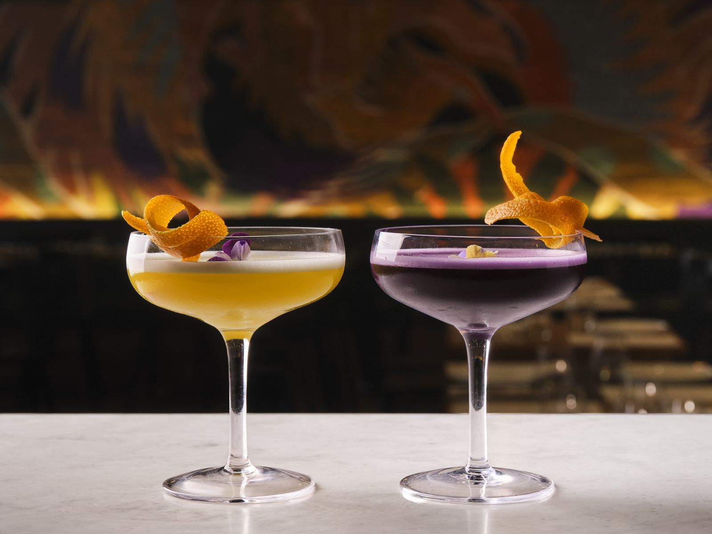
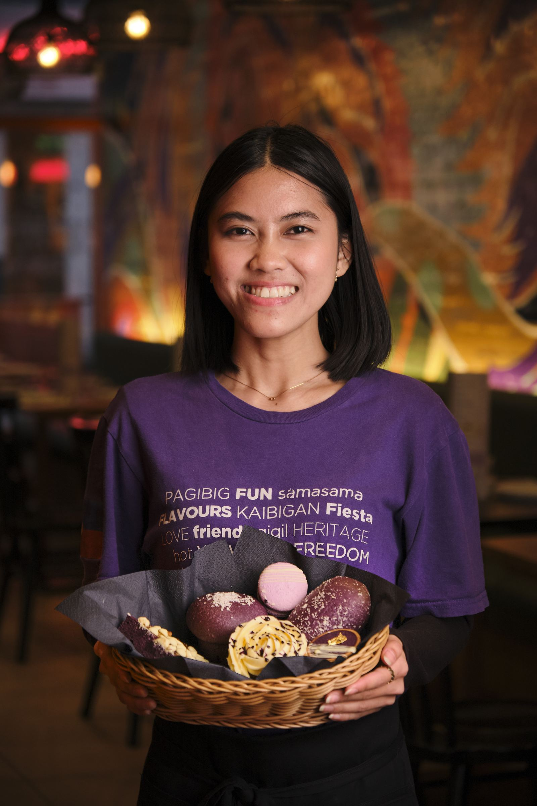
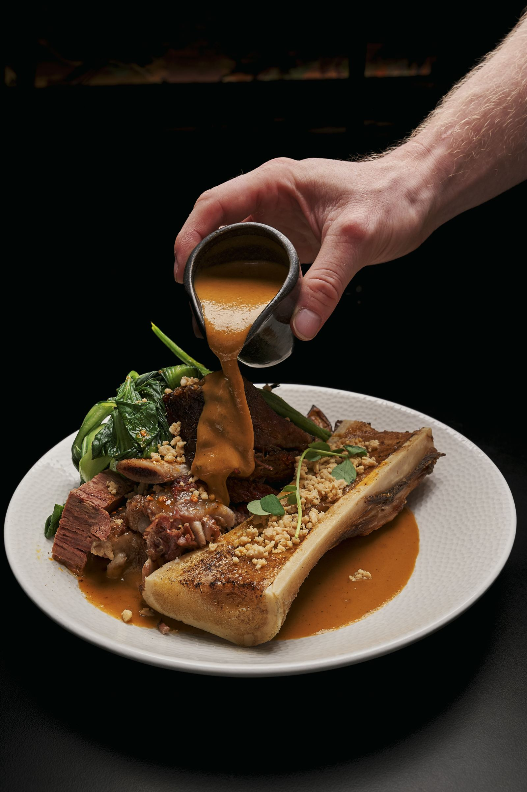
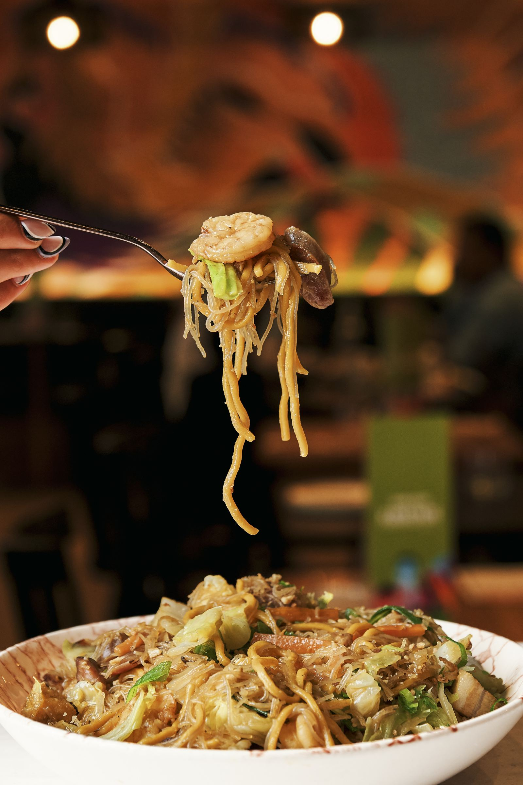
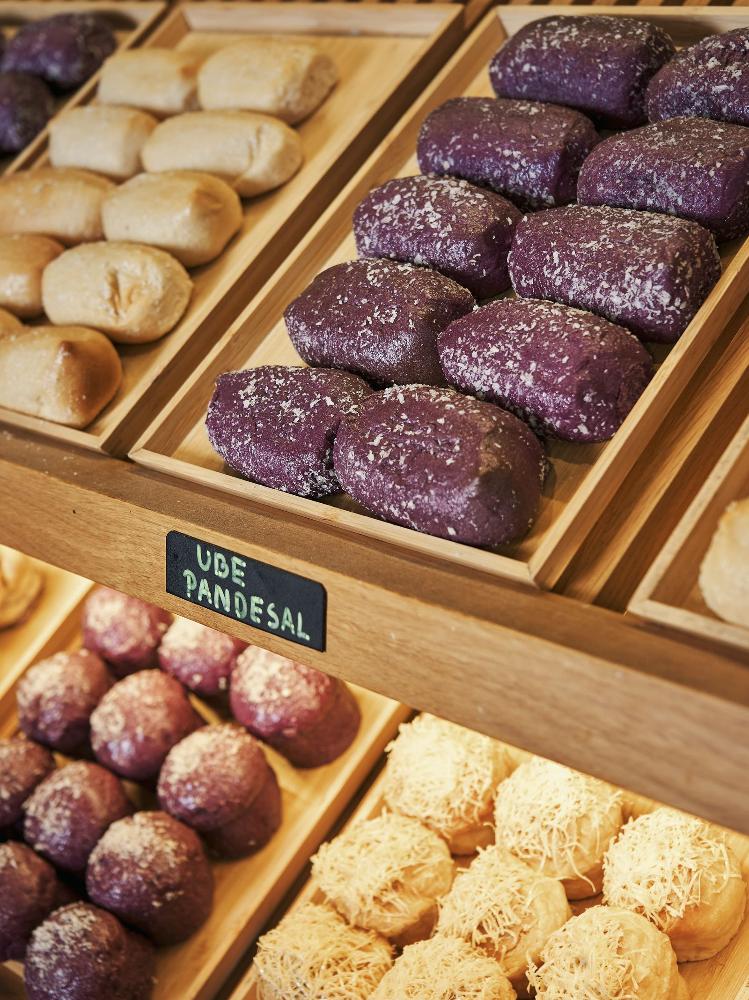
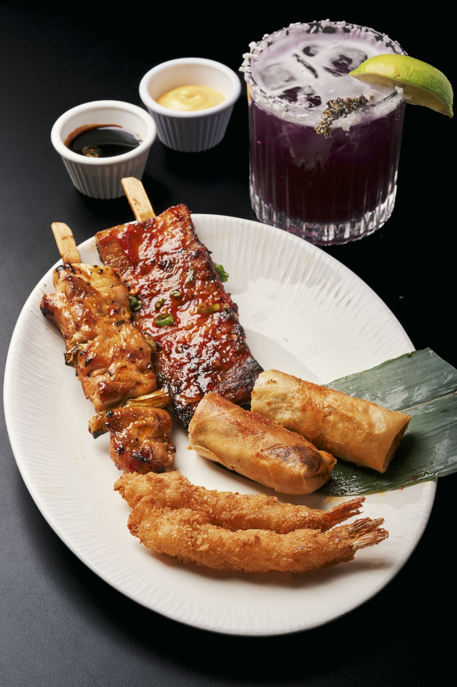

Made for sharing
Filipino meals aren't courses, they're a table full of dishes everyone reaches across. Ours is cooked that way: order a few things, pass them round, argue over the last bite.
Our story
A Filipino restaurant, bakery and bar on Poland Street, run by co-founders Rowena Romulo and Chris Joseph, and built on one belief: Filipino food belongs among the great cuisines of Asia.


Why Soho
For the longest time, Filipino food has been South East Asia's best-kept secret. We wanted to change that, and there was only one place to do it: Soho, London's most dynamic district and home to its most pioneering food.
In 2021 we took the keys to 52–53 Poland Street and built three things under one roof: a restaurant, a bakery and a bar. A place for family and friends to gather, and for Filipino cuisine to take its rightful place among the great cuisines of Asia.
What we believe

Filipino meals aren't courses, they're a table full of dishes everyone reaches across. Ours is cooked that way: order a few things, pass them round, argue over the last bite.

Pandesal, ensaymada and ube cakes go in the oven before Soho wakes up. The bakery counter is the first thing you see for a reason.

Ube is our flag. It's in the martini, the bread, the cheesecake and the cake, because it's the taste of home and nobody else in Soho was making it.
Meet ube →The people
Co-founders Rowena Romulo and Chris Joseph run the floor and the kitchen with a team that's as much kin as staff. Many of them have been with us since day one.
We also back Filipino charities and host Kasa Klub, a monthly stage for emerging Filipino and London talent, because a home should give something back.
About Kasa Klub


The space
Designed by CADA Design: a bright, modern room by day that warms up as the lights go down. Twenty seats outside on Poland Street when the weather plays along.


Book a table, or just walk in for a pandesal and a coffee. Either way, you're kin.